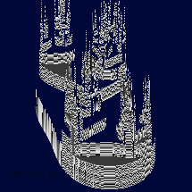
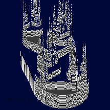

Original Proposal

New Proposal
Update.1: 11/25
Update.2: 12/11
------------------------------------------
Introduction to Formants
Autoregressive Models
Vowel Recognition Using Formants
Formant Estimation/Extraction
Voice Recognition Using Pitch Determination
Process Flowchart
Conclusions
Possible Future Additions
Matlab Code
References
Original Proposal
New Proposal
Update.1: 11/25
Update.2: 12/11
------------------------------------------